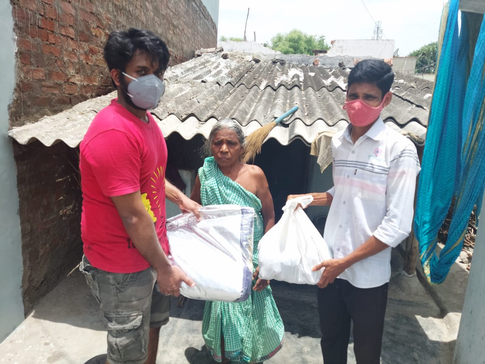
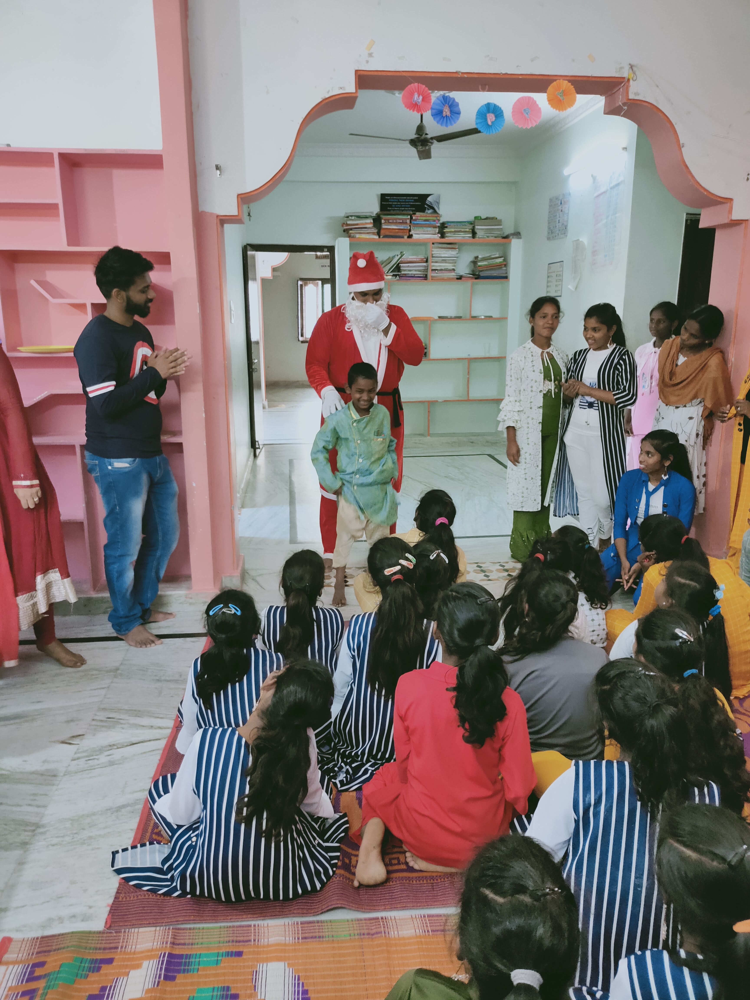
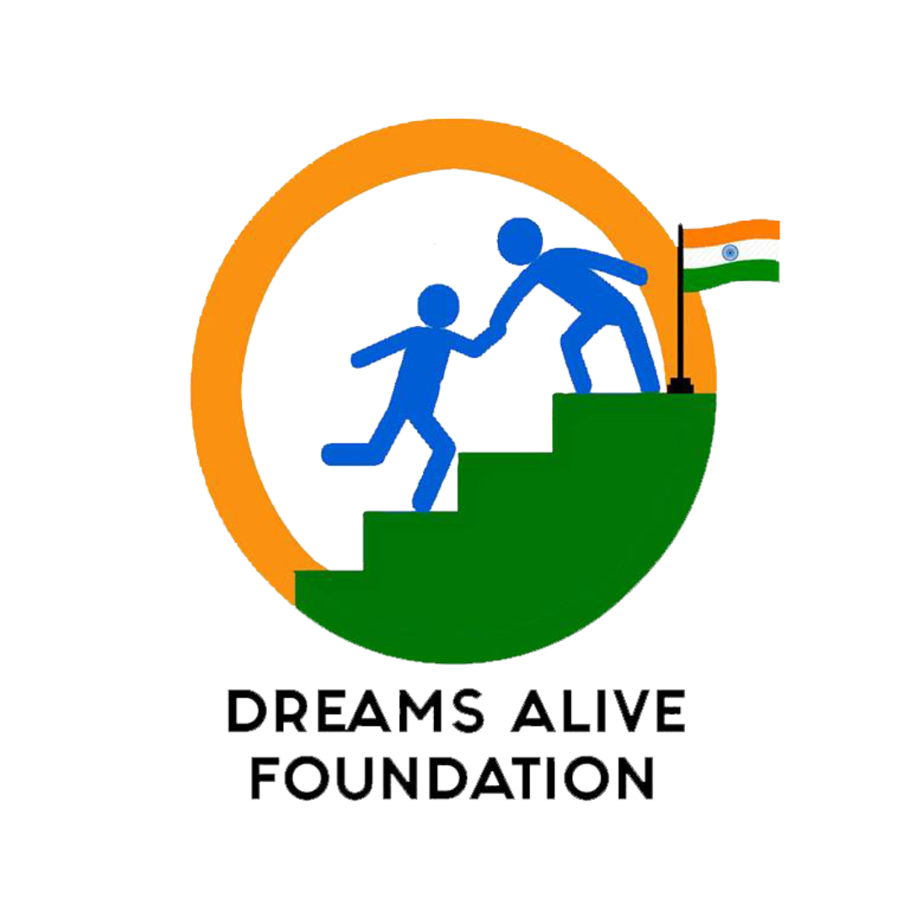
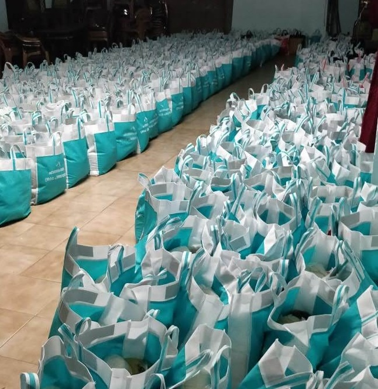

VOLUNTEERING EXPERIENCES
As a passionate advocate for social impact, I immerse myself in volunteer work to uplift our community. Engaged with non-profits and student organizations, I advocate for those in need, striving to amplify their voices and provide support. Together, let's make a meaningful difference and foster positive change.
Educator
 At Rutgers, I proudly serve as a volunteer research assistant and teaching assistant for the esteemed Data Analysis and Visualization course. From teaching essential tools like Tableau, Python, and R to providing valuable resources and organizing networking events, weekly challenges, and competitions, I strive to create an engaging learning environment. Additionally, as a guest speaker at Rutgers' Data Visualization event, I had the pleasure of sharing insights into the significance of Data Visualization, discussing best practices, and leading interactive activities such as designing business dashboards with the audience.
At Rutgers, I proudly serve as a volunteer research assistant and teaching assistant for the esteemed Data Analysis and Visualization course. From teaching essential tools like Tableau, Python, and R to providing valuable resources and organizing networking events, weekly challenges, and competitions, I strive to create an engaging learning environment. Additionally, as a guest speaker at Rutgers' Data Visualization event, I had the pleasure of sharing insights into the significance of Data Visualization, discussing best practices, and leading interactive activities such as designing business dashboards with the audience.
President - Student Assocation
 As President of the Masters in Information Technology and Analytics Student Association at Rutgers Business School, I had the privilege of bridging the gap between students, faculty, and the college community. Our association organized a myriad of activities, from informative sessions to welcome new students, to meet-and-greet events, training sessions, and collaborations with other organizations for educational and cultural enrichment. We diligently disseminated information about career fairs, company meetups, and training sessions, ensuring that every member had access to valuable opportunities. Committed to supporting our community, we were always available to lend a helping hand to anyone in need.
As President of the Masters in Information Technology and Analytics Student Association at Rutgers Business School, I had the privilege of bridging the gap between students, faculty, and the college community. Our association organized a myriad of activities, from informative sessions to welcome new students, to meet-and-greet events, training sessions, and collaborations with other organizations for educational and cultural enrichment. We diligently disseminated information about career fairs, company meetups, and training sessions, ensuring that every member had access to valuable opportunities. Committed to supporting our community, we were always available to lend a helping hand to anyone in need.
Covid Relief Activities
In the wake of the persistent challenges brought on by the ongoing COVID-19 second wave, many families, particularly those without access to white cards for monthly rations, have found themselves in increasingly dire straits. We, as part of Dreams Alive Foundation, embarked on a mission to assist those most affected. We identified approximately 50 vulnerable households facing severe hardship due to job losses and diminished incomes. We procured essential groceries to assemble comprehensive food kits designed to sustain these families for an entire month. From pantry staples to essential toiletries, each kit was thoughtfully curated to address their most pressing needs.
Children's welfare activities
 As part of our involvement with the Dreams Alive Foundation, we had the privilege of spreading joy to orphanages on December 25th, Christmas Day. Spending the entire day with the children, we brought smiles and laughter by organizing various activities and providing gifts. With one of our team members donning the role of Santa, we distributed presents and ensured that every child felt cherished and loved. Recognizing the orphanages' need for grocery supplies, we also extended our support in this regard, further enhancing the festive spirit of the day. It was a heartwarming experience to see the joy and happiness we could bring to these children, reaffirming our commitment to making a positive impact in their lives.
Secretary - Dreams Alive Foundation
 As the secretary of Dreams Alive Foundation, I have had the honor of being part of a remarkable journey initiated by the alumni of NIT Calicut, dedicated to giving back to society. Comprised of young engineers and entrepreneurs driven by a shared commitment to make a meaningful difference, our foundation stands firm in its resolve to support the less fortunate. In addition to providing material assistance, we believe in empowering individuals through knowledge dissemination and career guidance, recognizing the transformative potential of education and mentorship. Through the successful execution of over 80 projects and the provision of assistance to more than 400 families, our efforts have been directed towards areas such as healthcare, education, and childcare. With a steadfast dedication to our mission, we continue to strive towards building a brighter and more equitable future for all.
Kerala Floods 2018 - Relief Activities
During the devastating Kerala floods of 2018, I volunteered to aid those affected by the catastrophe. Witnessing the widespread destruction and displacement of families, I joined hands with the community in relief efforts that spanned over a month. From packing essential groceries across multiple locations to distributing them to those in need, the people of Kerala united tirelessly to assist everyone impacted by the disaster. I was deeply involved in these relief activities, offering assistance in any way I could. It was an immensely rewarding experience to be able to contribute to the recovery efforts during such trying times. Furthermore, I was humbled to receive recognition for my efforts from the District Collector of Kozhikode, who honored me with a certificate of appreciation for my contributions to the relief efforts.